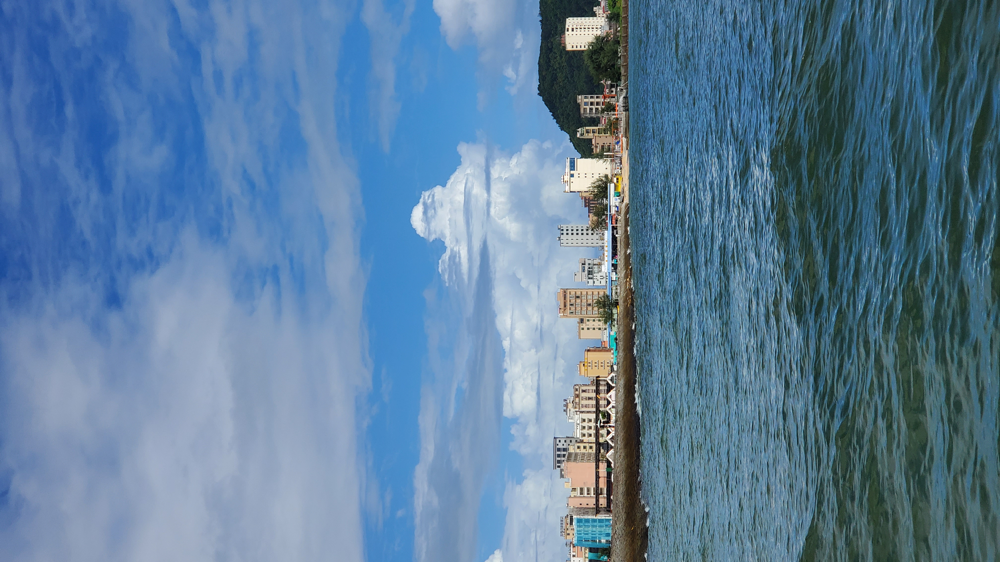

研五下学期总结
序
9.3 返校.
课题
开学后 rf 谱的课题, 又试着用平均场的方法算了一下零温的情况. 算到要解准粒子色散关 系时, 课题中断, 跑去找大 J 做课题. 目的是为了能发一篇文章, 再加上 rf 谱的文章, 就可以达到要求, 按时毕业.
剩下的时间, 在大 J 那做了两个课题. 第一个是关于离子边带冷却的非厄米系统中的 skin effect 用时较短, 做了解析推导的部分. 第二个是主要工作, 量子同步中的阻塞效应.
八月底暑假回家时量子同步中的阻塞效应已经完成主体工作, 只剩下修改文章. 非厄米系统 的工作打算把数值也做一下.
总的来说, 这个学期的工作是比较快速的. 一方面利益于几年科研工作积累的各种经验, 知 识, 使得项目可以快速进行. 另一方面这两个工作并有之前 rf 谱的工作量大, 没有巨量的 前置技能, 没有大量的解析推导, 没有充满各种发散问题的数值计算. 如果接下来文章投得 顺利, 应该可以按时毕业.
读书
一心扑在工作上, 没有专门来看一些书. 不过, 工作的过程中, 极大的加深了对量子光学的 一些知识的理解. 从某种程度上讲, 获得了比读书更加深刻的理解.
业余
邦邦也没怎么打. 因为条件允许了, 大部分业余时间都在练电吉他和打拳.
考虑到自己的需求简单, hexo 升级不断出现兼容问题, 对博客系统进行了改版. 一个脚本 就可以满足大部分需求.
在博客改版之后, 写了一个 org-mode 渲染程序.
304 的电脑在学校做为影音系统和网络中转服务器, 零事故运行.
总
研五上的末尾也有很多难忘的回忆! 希望明年我能按时毕业! 找到一个新的好去处!
